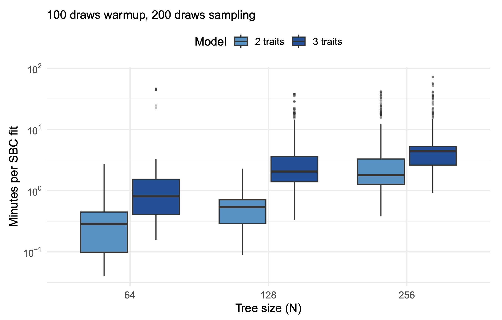

As with many Bayesian statistical models fitted with MCMC, the generalised dynamic models implemented in the coevolve package may take anywhere from a few minutes to a few hours to run on a standard laptop. Model runtimes will depend on several interacting factors, including the number of taxa, the topology of the tree, the number of trees, the number of traits, the response distributions for different traits, and the presence of missing data and repeated observations.
Below, we present the computation times from a simulation study conducted in Ringen et al. (2026). These simulations offer an initial look into how computation time scales with the number of taxa and traits.
The plot below summarises the distribution of per-fit times for relatively short fits used in our simulation study. In the simulation-based calibration (SBC) study, we generated 500 datasets with different sample sizes (N = 64, 128, 256) and numbers of traits (2 or 3). The models contained different mixtures of continuous and binary traits. The models were run using the default Stan backend on an M3 MacBook Pro. See the Supplementary Information (Section 1) from Ringen et al. (2026) for more details about the simulation study.

Computation time increases with both sample size and the number of traits, as expected given the increased complexity of tree traversal and parameter estimation. For empirical analyses, we would almost always use more draws, so one can loosely extrapolate to “real world” computation times by multiplying the times in the plot by 5-10x. For a typical analysis with a single dataset (rather than 500 simulated datasets), users can expect model fitting to complete in minutes for smaller phylogenies to a few hours for larger trees with more traits.
While Stan is the default backend for coev_fit() models,
users can also try the JAX backend, which may reduce computation times
for certain models. For more details, see the JAX
vignette.
Ringen, E., Claessens, S., Martin, J. S., & Jaeggi, A. V. (2026). Trait coevolution and causal inference using generalized dynamic phylogenetic models. Methods in Ecology and Evolution, 17(6), 1818-1836. https://doi.org/10.1111/2041-210x.70303